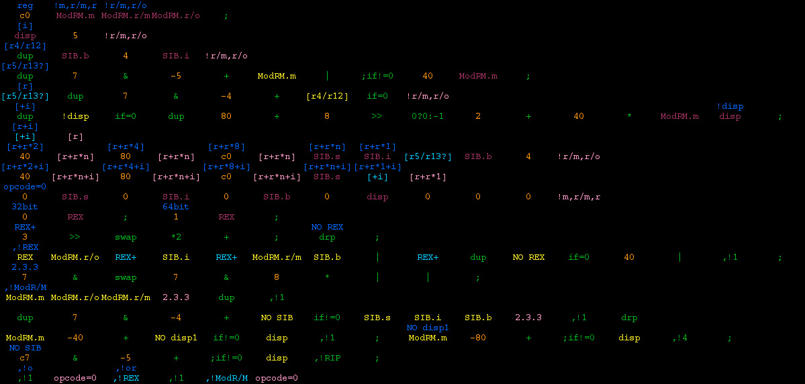

20070910 - 2 4th | !2 4th
After just finishing up the last show of the season for my Photography Business (lighting shot above from Monument Valley),
I will again soon have time to really push to finish Atom.
Besides working on optimization of the engine, I've flushed out the scripting language I'm going to use as a rapid development tool to produce the game.
Since I'm going solo on this endeavor, I'm fully taking advantage of the fact that I can deviate from the common C/C++ standard which would be a practical requirement of working in a large team.
One notable, successful, and practical use of non-C like languages for game development is the
Game Object Assembly Lisp (GOAL)
used to build Jax and Daxter for the PS2. With inline assembly and runtime code generation,
looks like they found a perfect mix of both a very high and very low level programming language.
Forth
Similar in concept to GOAL, I've decided upon a Color Forth like rapid development programming tool for Atom which has the following advantages.
- Run-time x86/x86-64 binary code generation. Can code the game from inside the game itself.
- Ability to natively mix low level assembly, mid-level systems programming, and high level scripting all in the same source code.
Full forth like factoring of code at any level.
- Compiler which has no need of lexical analysis, preprocessing, parsing, or semantic analysis.
Code is in a binary form with near direct factored translation to machine code.
So full re-compile of the entire source base in less than a second, from within the game itself.
- Built-in in-game console, code/data editor, scripting, and debug tool. Editor works somewhat like a mix between a console, text editor, spreadsheet, and a debugger.
- Data mixed in code in native binary form. No need for serialization code, simply save the program's code and the program's data is "serialized" as it is saved to disk.
- Insane ease of use, code is color syntax highlighted, tab completion, multiple views, auto lookup and view of code/data definitions/values as cursor moves from word to word, and more.
- And most importantly, it is amazingly simple. Current prototype of the built-in x86/SSE assembler is less than 4K of code/data.
I'll be posting more as I work on this production tool.
For those who know about Color Forth here is a quick preview. I've deviated quite far.
For instance my dictionary is embedded in the code itself, and as you edit (moving the memory locations of words around),
dictionary pointers are automatically re-linked. So the dictionary is direct, there is no need for hashing or searching to lookup a word.
My cell size is 16 bytes (supports SSE vectors) for the stacks and the dictionary, but source code is still in 32-bit tokens.
I'm supporting floating point single and double precision. Source code is similar to Color Forth, with many exceptions.
I've split the tag bits into 2 blocks. So code tokens still have a "color" tag, but data is embedded directly in code tokens without any tag bits.
In order to know if the source token is code or just raw data, the shadows blocks now contain extra tags fields which note code vs data and if data,
the type of the data (text, bytes, words, float, double, vector etc). So shadow blocks no longer contain comments,
instead they contain tag bits and are used to encode the dictionary directly (holding the strings to name words).
More later ... but for now, here is a shot as I was prototyping the language, prior to deciding to embed the dictionary in the source code.
Of course, I've already changed all this but it will give you an idea.
At this point in the development the colors were as follows,
- DEFINE-TOKEN: Copy address of this token into dictionary word indexed by tag index field.
- DEFINE-COMPILED: Copy memory stack top pointer into dictionary word indexed by tag index field.
- DEFINE-VARIABLE: Copy data from token (or vector of 2 or 4 tokens based on tag type field) into dictionary word indexed by tag index field.
- COMMENT: If tag is not set to define then tag index field is a comment.
- JUMP: Dictionary word indexed by token is a pointer to a code token, jump interpreter to that point.
- INTERPRET: Dictionary word indexed by token is a pointer to a code token, push current interpreter position on interpreter return stack,
then jump interpreter to that point.
- EXECUTE: Dictionary word indexed by token is a function pointer, call that function.
- COMPILE: Dictionary word indexed by token is a function pointer, compile a call to that function at the current memory stack top.
Advance the memory stack top to point to after the compiled CALL opcode.
- PUSH-TOKEN: Push data from token (or vector of 2 or 4 tokens based on tag type field) into data stack.
- PUSH-WORD: Push cell value from dictionary word indexed by token onto data stack.
- POP-WORD: Pop cell top of data stack into dictionary word indexed by token.
- IGNORE: Ignore token. Used for extra comments, and defining data.
The shot shows part of the assembler code block. If you read enough to decode it, you will notice that I was assembling with interpreted instead of compiled code.
Click on the image to see the full size version which is actually readable...

Interested in "Moore" Forth?
Check out the evolution of Forth and the work of Chuck Moore (Forth's Inventor), specifically
Color Forth and
Jeff Fox's writings.
Moore's ideas are simply revolutionary, asynchronous massively multi-processing ultra-low power (24 billion operations / second at 450mW, yes thats mW!)
18-bit forth based processor
designed for embedded DSP and more.
{kind=link}